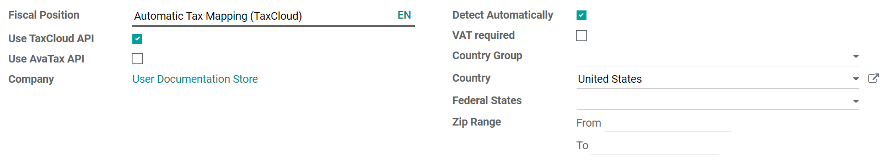

Integración con TaxCloud¶
Advertencia
Ya comenzamos a sacar de servicio la integración con TaxCloud, empezando con Odoo 17. En Odoo 17 se prohibirán nuevas instalaciones, mientras que en Odoo 18 los módulos de TaxCloud ya no existirán. Odoo recomienda usar mejor la plataforma Avatax
Ver también
TaxCloud calcula la tasa de impuestos de venta en tiempo real para cada estado, ciudad y jurisdicción de los Estados Unidos. Da seguimiento a los productos que están exentos de impuestos de venta y en qué estados aplica la excepción.
Registro en TaxCloud¶
Registre una cuenta en TaxCloud.com y complete la configuración. Una vez en funcionamiento, obtenga sus claves API de TaxCloud al hacer clic en tiendas y luego en obtener detalles.
Habilitar TaxCloud¶
Vaya a y en la sección impuestos habilite la opción TaxCloud.
Agregue el ID de inicio de sesión de la tienda en ID de API y la clave de la tienda en CLAVE API. Haga clic en guardar.
Haga clic en el botón actualizar (🗘) que se encuentra a lado del campo categoría predeterminada para importar las categorías de productos de los TIC códigos de información fiscal desde TaxCloud. Algunas categorías pueden implicar tasas de impuestos o excepciones específicas.
Seleccione una categoría predeterminada y guardar. La categoría predeterminada se aplica cuando no se establece ninguna categoría de TaxCloud en sus productos o categorías de productos, o cuando no se encuentra ningún producto en una orden o factura.

Establecer categorías de TaxCloud en productos¶
Si necesita utilizar más de una categoría TIC (es decir, la categoría predeterminada), vaya a la pestaña información general del producto y seleccione una categoría TaxCloud.
Si desea configurar varios productos de forma simultánea, asegúrese de que pertenecen a la misma categoría de producto y haga clic en el botón de enlace externo (🡕) para establecer una categoría de TaxCloud en la categoría de producto.
Nota
Si establece una categoría TaxCloud en un producto y otra en su categoría de producto, Odoo solo considera la categoría TaxCloud que se encuentra en el producto.
Una categoría TaxCloud establecida en una categoría de producto principal no se aplica a sus subcategorías de producto. Por ejemplo, si establece una categoría TaxCloud en la categoría de producto todos, no se aplica a la categoría de producto todos/ventas.
Importante
Asegúrese de que la dirección de su empresa esté completa, incluyendo el estado y el código postal. Vaya a para abrir y editar la dirección de su empresa.
Registrar de forma automática los impuestos en la cuenta de impuestos por pagar correcta¶
Para asegurarse de que los nuevos impuestos generados por la integración con TaxCloud se crean con la cuenta de impuestos por pagar correcta, cree un valor predeterminado definido por el usuario. Debe repetir este proceso para cada una de sus empresas que utilicen TaxCloud.
Advertencia
Un valor predeterminado definido por el usuario afecta a todos los registros al momento de la creación. Significa que cada nuevo impuesto se configura para registrar los ingresos en la cuenta de impuestos por pagar especificada, a menos que el impuesto se edite de forma manual para especificar una cuenta de ingresos (o si otro valor predeterminado definido por el usuario tiene prioridad).
Para hacerlo vaya a , encuentre la cuenta de impuestos por pagar de la empresa y haga clic en configuración. Tome nota del número después de id= en el URL. Es el ID de la cuenta de impuestos por pagar y se utilizará después.

Active el modo de desarrollador y luego vaya a y haga clic en crear.
Haga clic en el menú desplegable campo y luego en buscar más….

Utilice la barra de búsqueda para filtrar según el modelo línea de partición de impuestos y vuelva a utilizarla para filtrar según el campo cuenta. Seleccione la línea mediante el modelo línea de partición de impuestos en la columna modelo.
Una vez que regrese a la creación de valores predeterminados definidos por el usuario, introduzca el ID de la cuenta de impuestos por pagar que anotó antes en el campo valor predeterminado (formato JSON).
Seleccione la empresa a la que debe aplicarse esta configuración en el campo empresa y haga clic en guardar.

Detectar la posición fiscal de forma automática¶
Los impuestos de venta se calculan en Odoo según las posiciones fiscales. Cuando se habilita TaxCloud se crea una posición fiscal para Estados Unidos.
Puede configurar Odoo para que detecte de forma automática a qué clientes se debe aplicar la posición fiscal. Para hacerlo, vaya a y seleccione mapeo automático de impuestos (TaxCloud). Habilite la función detectar de forma automática y guardar.
Esta posición fiscal se establece de forma automática en cualquier orden o factura si el país del cliente es Estados Unidos. Esto activa el cálculo automático de impuestos.
Nota
Para obtener los impuestos de venta de una orden de venta, confírmela o haga clic en el botón actualizar impuestos a lado de agregar envío.
Interacción con cupones y promociones¶
La integración con TaxCloud puede tener un comportamiento inesperado si utiliza los programas de promociones o cupones. Como TaxCloud no acepta líneas con importes negativos como parte del cálculo de impuestos, el importe de las líneas agregadas por el programa de promociones se debe deducir del total de las líneas que afecta.
Importante
Esto significa, entre otras complicaciones, que las órdenes que utilicen cupones o promociones con una posición fiscal de TaxCloud deben facturarse por completo, no se pueden crear facturas para entregas parciales, etc.
Es posible que tenga otro resultado. Por ejemplo, si vende un producto para el que tiene un programa de promoción que ofrece un descuento del 50%. Si la tasa de impuestos del producto es del 7%, la tasa de impuestos calculada mediante la integración con TaxCloud es del 3.5%. Esto sucede porque el descuento está incluido en el precio que se envía a TaxCloud. Sin embargo, en Odoo, el descuento está en otra línea completamente diferente. Aun así, el cálculo del impuesto es correcto. De hecho, un impuesto del 3.5% sobre el precio total es el equivalente a un impuesto del 7% sobre la mitad del precio, pero esto podría ser inesperado desde el punto de vista del usuario.